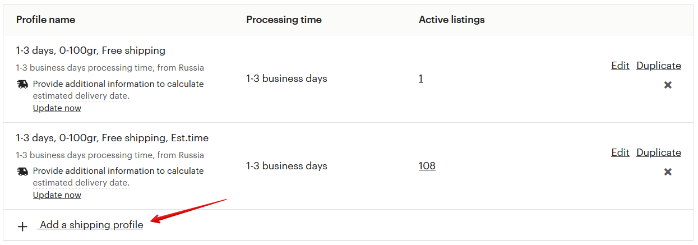
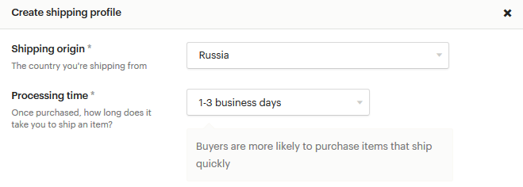
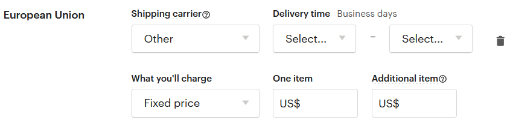
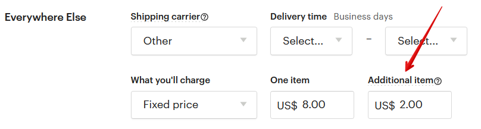
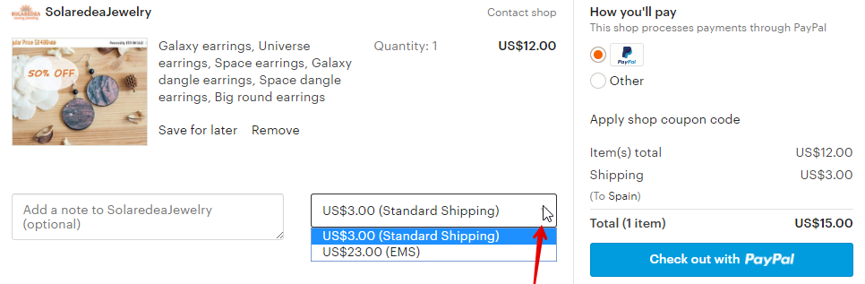

рублей. От 100 до 250 грамм – 450 рублей. Данные цены указаны при отправке
марками (без НДС) – обязательно попросите оператора в почтовом отделении
отправить именно так. Иначе стоимость отправки увеличится примерно на 30-
100 рублей (в зависимости от веса).
В случае посылок цена зависит и от страны назначения, и от веса. Так, напри-
мер, посылка весом 3 кг в США стоит 1180+383+383=1946 рублей, а в Австра-
лию – 1620+691+691=3002 рублей. Первая цифра – стоимость первого кило-
грамма, а последующие цифры – стоимость каждого следующего килограмма.
Пример указан для отправки марками. Но может так случиться, что в вашем
отделении не окажется марок такого номинала. Тогда придется оплачивать еще
бОльшую стоимость.
Если вы отправляете посылки, а не мелкие пакеты, стоимость доставки можно
указать для всех основных стран (например, США, Австралия, Канада, Велико-
британия), а для остальных выставить какую-то усреднённую стоимость.
Чтобы каждый раз не прописывать эти значения для новых листингов, удобно
использовать Shipping Profiles.
Можно ли сделать шаблон для цен на доставку (Shipping
Profiles)
Да, на Этси это называется Shipping Profiles. Вам нужно лишь 1 раз указать сто-
имость доставки для разных стран, а потом у каждого нового листинга выбрать
нужный профиль доставки.
И в случае, если цены на почтовые услуги изменятся, вам нужно будет внести
изменения лишь в этот профиль – и они автоматически применятся к листин-
гам, где вы указали данный профиль.
Например, у меня сделаны следующие профили:
• мелкий пакет до 100 грамм
• мелкий пакет от 101 до 250 грамм
• мелкий пакет от 251 до 500 грамм
И у каждого профиля своя цена доставки.


Как создать Shipping Profiles
Для этого перейдите в меню Shop Manager – Settings – Shipping settings – Ship-
ping profiles.
Здесь показан список текущих профилей. Чтобы добавить новый, нажмите
кнопку Add a shipping profile.
Здесь вы указываете:
• страну отправки (Shipping origin)
• сколько времени вам нужно, чтобы отправить заказ, считая с момента
оплаты (Processing time)


Далее необходимо указать стоимость отправки в различные страны:
• служба доставки (Shipping carier) - по умолчанию оставьте вариант Other
• время доставки (Delivery time) - можно указать, если вы примерно знаете,
сколько может занять доставка (не обязательно)
• стоимость доставки (What you'll charge)



Чтобы добавить новую страну в список, нажмите Add another location. А если
стоимость отправки во все страны одинаковая, то достаточно пункта Everywhere
Else.
В параметре What you'll charge по умолчанию стоит вариант Free shipping (бес-
платная доставка). Если вы хотите, чтобы за доставку покупатель платил допол-
нительно, то выберите пункт Fixed price.
• цена отправки при заказе только этого товара (One item)
• цена доставки, если товар заказали вместе с другим или их заказали не-
сколько штук (Additional item)
Теперь останется только придумать название профиля (Profile name) и нажать
кнопку Create profile.
Всё, теперь, добавляя новый листинг или редактируя существующий, останется
выбрать нужный профиль – и все параметры подставятся автоматически.

Как указать, что я отправляю по всему миру
Для этого в параметрах Fixed shipping costs нужно выбрать не конкретную
страну, а пункт Everywhere Else.
Стоимость доставки нужно указывать для каждой страны от-
дельно
Если стоимость доставки отличается для каждой страны, то необходимо выста-
вить её для всех нужных стран.
Если стоимость везде одинаковая, то укажите её в пункте Everywhere Else.
Укажите эти параметры один раз в Shipping Profiles – после этого останется в
нужном листинге лишь выбрать нужный профиля доставки.
Как сделать бесплатную доставку в США
С июля 2019 года на Etsy можно создать специальный профиль доставки для
жителей США. Если они закажут в вашем магазине товаров на сумму 35 долла-
ров или больше, то получат от вас бесплатную доставку.
“Взамен” товары и магазины, у которых включено такое условие, получали не-
большой приоритет в поисковой выдаче для покупателей из США (если товары
находились на 1-й странице поиска по какой-то фразе).
Но уже через несколько месяцев после этого приоритет в поиске практически
исчез для большинства фраз.


Если вы всё-таки хотите включить эту акцию в магазине, перейдите в раздел
Settings – Shipping settings - US free shipping guarantee.
После этого нажмите кнопку Get started.
В открывшемся окне нажмите кнопку Set free shipping now.


Если вы в какой-то момент решите выключить данную акцию, то на той же стра-
нице нажмите кнопку Yes, turn off guarantee в самом низу страницы.
Как уменьшить стоимость доставки на 2-й и последующие то-
вары
За это отвечает параметр Additional item. Если здесь ничего не указать, то стои-
мость доставки каждого добавленного в корзину товара будет браться из поля
One item.
Если в этом поле выставить значение 0, то доставка второго и последующих
товаров будет бесплатная. Порой это побуждает покупателей заказывать
больше.
Как указать разную цену доставки для разных вариаций
Допустим, что у вас есть товар в двух вариациях: маленький с весом 1 кг и боль-
шой с весом 2 кг. Покупатель выбирает, какой размер ему больше нравится.
При этом в настройках товара нельзя указать разную стоимость доставки в за-
висимости от выбранной вариации. Стоимость доставки всегда едина.

Единственное, что можно сделать – заложить разницу стоимости доставки в
цену товара второй вариаций.
Можно ли указать разные способы доставки (Shipping
Upgrades)
Вы можете предложить своим покупателям не только стандартный способ до-
ставки, но и ускоренный, например, EMS, DHL или т.п.
Для этого перейдите в меню Shop Manager – Settings – Shipping settings – Up-
grades.
Здесь нужно включить опцию Shipping Upgrades, выбрав Enabled.
Теперь переходите в созданный ранее Shipping Profiles, выбирайте нужный
профиль – и после стоимости отправки обычной почтой у вас будет пункт Ship-
ping Upgrades. Нажмите Add a shipping upgrade.


• Destination – местная или международная доставка (Domestic или
International)
• Name – название варианта доставки. Выберите из предложенных –
(Express, 1 Day, Economy) или напишите своё (Custom)
• Shipping carrier – оставьте по умолчанию Other
• Delivery time – сроки доставки (если знаете)
• One item – стоимость доставки отдельного товара
• Additional item – стоимость доставки, если товар заказывают вместе с ка-
ким-то другим
Учитывайте, что цены Shipping Upgrades плюсуются к цене стандартной от-
правки. То есть, если стоимость обычной отправки у вас 5 долларов, а ускорен-
ной – 15 долларов, то в Shipping Upgrades нужно выставить значение 10 дол-
ларов (15 минус 5).
После этого покупатели cмогут в корзине выбрать нужный вариант доставки –
стандартный или созданный вами.


Можно ли делать товары под заказ
Да, на Etsy есть такая возможность. Чтобы включить эту настройку, перейдите в
меню Shop Manager – Settings – Options.
Найдите там раздел Custom orders requests и включите опцию товаров на заказ,
выбрав Enabled.
Теперь на главной странице вашего магазина, под списком категорий, появится
кнопка Request Custom Order.
После этого вы можете добавить в магазин листинг для примера, которого пока
нет в наличии, но вы можете сделать его под заказ. Для этого при создании
листинга в разделе About this listing укажите параметр Made To Order.